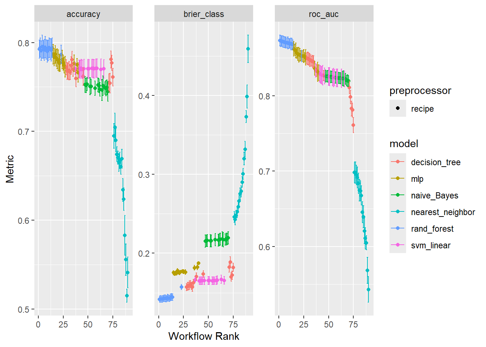
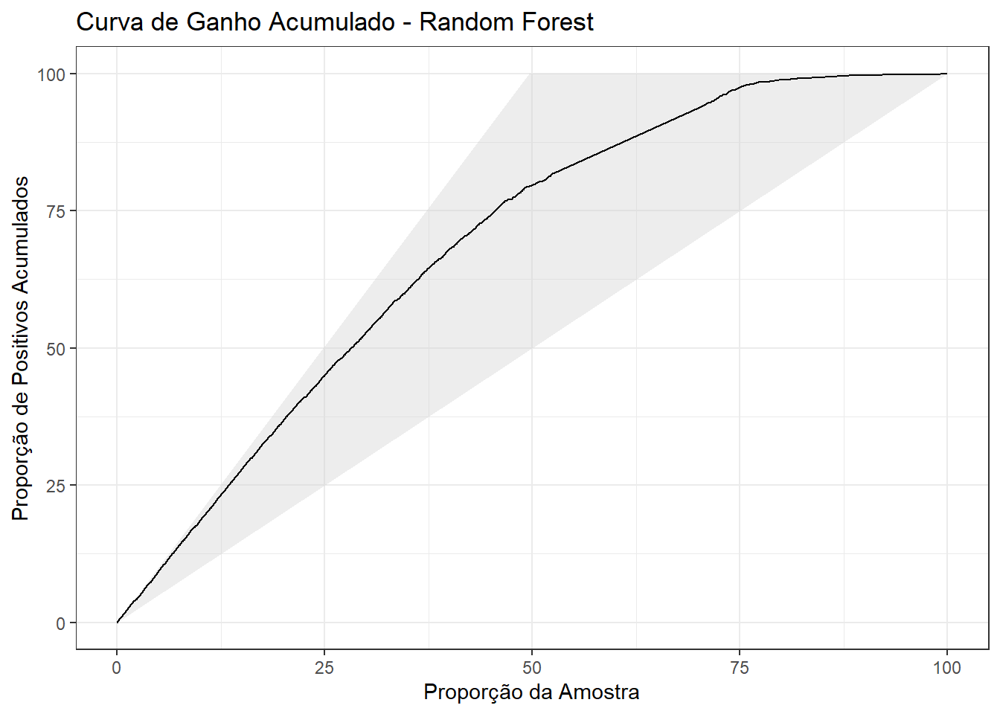
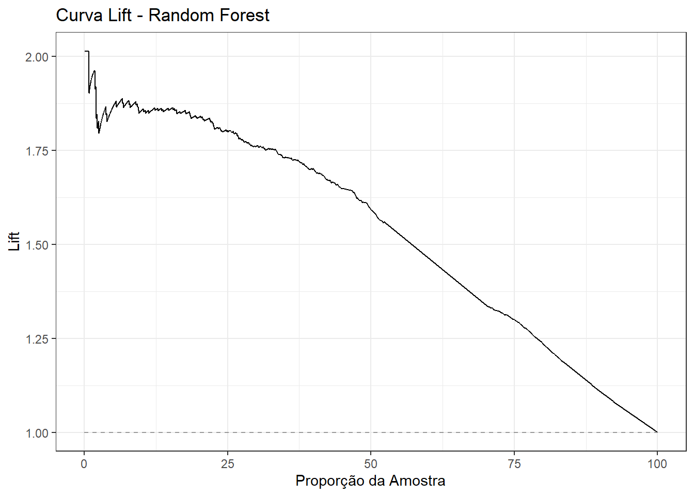
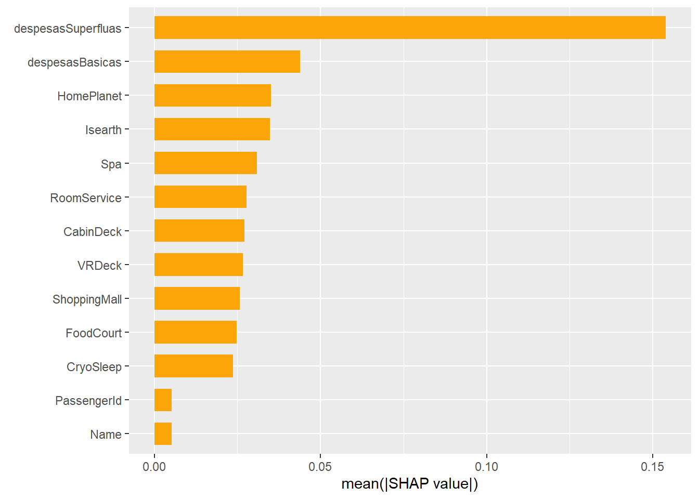
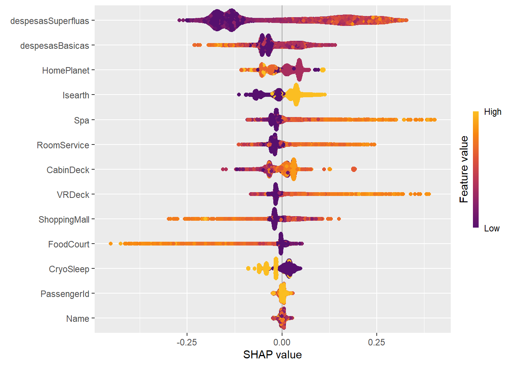
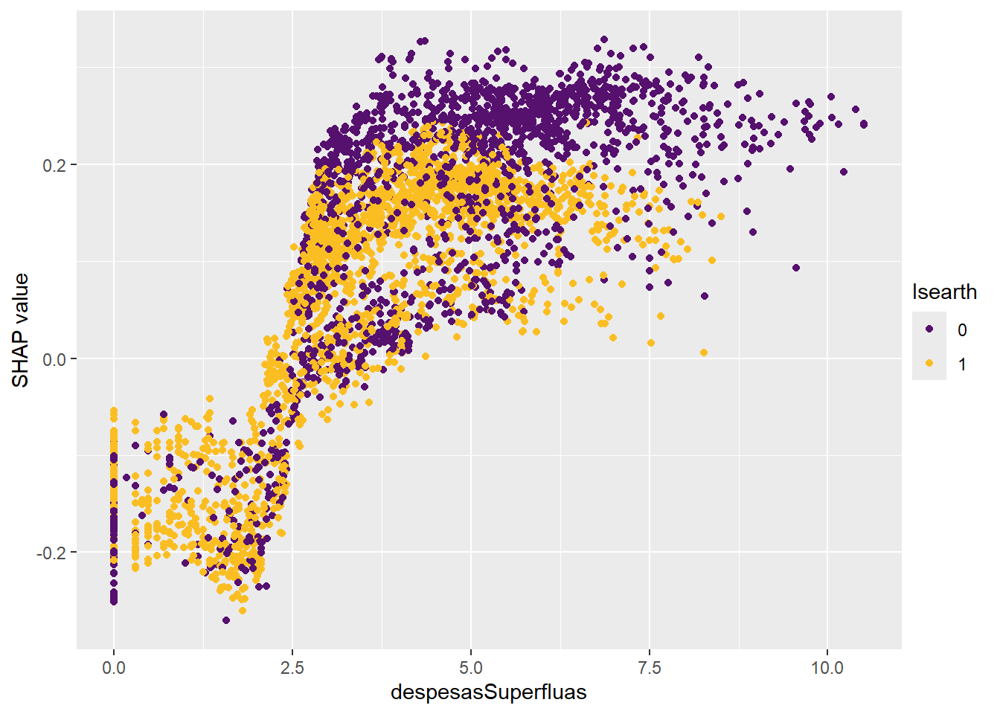
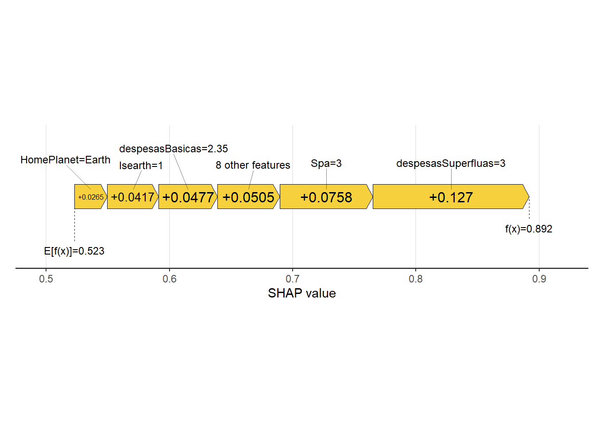
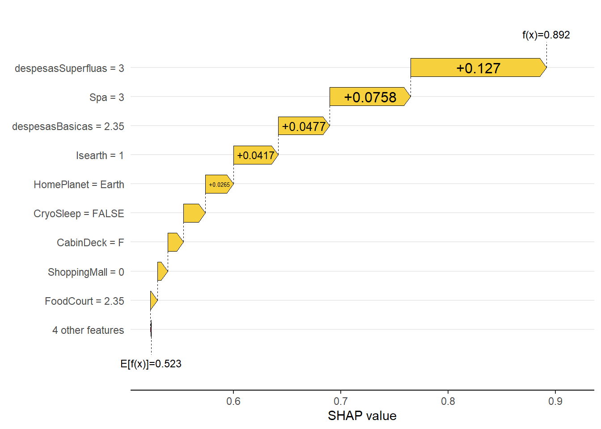

Construindo workflows preditivos usando a base de dados Space Titanic
Imagine que você recebeu um conjunto de dados misterioso sobre passageiros de uma espaçonave e que alguns deles desapareceram em uma outra dimensão! A missão? Construir um modelo preditivo para identificar quem foi “transportado” com base em características como gastos, cabine, companhia de viagem, etc.
Para essa jornada, vamos usar o pacote tidymodels do R, que nos ajuda a organizar todo o fluxo de análise preditiva de maneira limpa, modular e reprodutível. Além disso, vamos comparar seis modelos diferentes e ajustar automaticamente os seus hiperparâmetros para alcançar a melhor performance possível.
Na análise anterior, fizemos a exploração da base de dados e através dela, contruímos uma receita de pré-processamento utilizando o pacote recipes do ecossistema tidymodels.
dados = dados %>%separate(PassengerId, c("PassGroup", "nGroup"), sep ="_", remove =FALSE) %>%mutate(PassGroup =as.numeric(PassGroup))
dados = dados %>%separate(Cabin, c("CabinDeck", "CabinNum", "CabinSide"), sep ="/") %>%mutate(CabinDeck =as.factor(CabinDeck),CabinSide =as.factor(CabinSide))
Divisão dos dados
set.seed(12345)splits = dados %>%initial_split(strata = Transported)dados_treino =training(splits)dados_teste =testing(splits)
Neste momento chegou a hora de prepararmos a modelagem dos dados. Vamos comparar seis modelos diferentes de classificação, KNN, Naive Bayes, Árvore de Decisão, Random Forest, SVM e Rede Neural, todos aplicados ao conjunto de dados Space Titanic. Cada modelo será treinado e validado com técnicas de validação cruzada, e seus hiperparâmetros serão ajustados automaticamente para obter o melhor desempenho possível. Ao final, avaliaremos as métricas obtidas e selecionaremos o modelo que apresentar os melhores resultados para os dados analisados, considerando como critério de seleção a acurácia dos modelos.
Receita adicional de pré-processamento
Alguns algoritmos de machine learning (como KNN, SVM e Redes Neurais) são sensíveis à escala dos dados e necessitam que todas as variáveis sejam numéricas. Se uma variável tem valores muito maiores do que outra, ela pode dominar a distância ou as ponderações do modelo, mesmo que não seja a mais importante. Portanto, normalizar evita esse desequilíbrio e garante que todas as variáveis numéricas contribuam igualmente para a análise. Além disso, variáveis com variância zero não contribuem com informação útil para os modelos preditivos. Como todos os seus valores são iguais, elas não ajudam a diferenciar as classes que queremos prever. Somado a isso, podem até atrapalhar o desempenho do modelo ou causar erros em algoritmos que exigem variabilidade nos dados.
Todos os modelos foram configurados para realizar tarefas de classificação e tiveram seus hiperparâmetros definidos com tune(), o que permite que esses valores sejam ajustados automaticamente durante o processo de tuning com validação cruzada. Cada modelo está pronto para ser integrado a um workflow do tidymodels, utilizando funções como tune_grid() ou tune_bayes() para encontrar as melhores combinações de parâmetros. Com isso, conseguimos comparar o desempenho entre os diferentes algoritmos de forma justa e escolher aquele que apresenta os melhores resultados para o conjunto de dados analisado.
Juntando tudo
Vamos utilizar o pacote workflowsets do ecossistema tidymodels para organizar e comparar vários modelos e pré-processamentos ao mesmo tempo, de forma clara e automatizada. A função workflow_set() cria uma coleção de workflows, combinando diferentes receitas de pré-processamento (recipes) com diferentes modelos (models). Ela é útil quando queremos testar diversas combinações de forma sistemática.
Primeira parte: workflows com pré-processamento simples
Aqui estamos criando um conjunto de workflows chamado simples, onde usamos a receita zv_recipe, que executa todo o pré-processamento definido anteriormente em STRecipe adicionando o passo de verificação de variáveis com zero variância e a combinamos com três modelos diferentes:
Árvore de decisão (dt_model)
Random Forest (rf_model)
Naive Bayes (nb_model)
Isso resultará em três workflows com o mesmo pré-processamento e modelos distintos.
Segunda parte: workflows com pré-processamento mais elaborado
Neste bloco, criamos outra coleção de workflows chamada normalizados, que usa a receita recipe_normalizado, que realiza todo o pré-processamento definido em STRecipe adicionando as etapas step_normalize() e step_dummy(), que são essenciais para modelos sensíveis à escala. Essa receita é combinada com:
Juntamos todos os workflows (total de 6) em um único objeto complete_workflows e removemos os prefixos "simples_" e "normalizados_" dos nomes dos workflows, deixando o identificador do modelo mais limpo (ex: "arvore_decisao" ao invés de "simples_arvore_decisao").
Hora de começar o processo de treinamento
Primeiro, vamos criar os conjuntos de validação cruzada que serão usados para avaliar os modelos. Note que faremos uma validação cruzada com 10 dobras (folds), ou seja, o conjunto de dados será dividido em 10 partes, garantindo que a proporção de classes seja mantida em cada uma das dobras, o que é importante quando a variável resposta está desbalanceada. Em cada rodada, uma parte é usada como validação e as outras 9 como treino. As informações sobre esse processo são armazenadas no objeto cv_splits.
cv_splits =vfold_cv( dados_treino, v =10, strata = Transported)
A seguir, configuramos o comportamento do processo de tuning quando usamos tune_grid() (ou tune_bayes()) e salvamos no objeto grid_ctrl.
save_pred = TRUE: salva as predições feitas durante o tuning em cada dobra, o que permite gerar gráficos como curva ROC, matriz de confusão e análise de erro depois.
parallel_over = 'everything': habilita o uso de paralelização completa, ou seja, o R vai tentar usar múltiplos núcleos do processador para acelerar o tuning, paralelizando sobre modelos, dobras e combinações de hiperparâmetros.
save_workflow = TRUE : salva o workflow completo para cada combinação de hiperparâmetros testada, o que permite depois recuperar o modelo treinado com uma configuração específica.
Neste momento, vamos executar o tuning dos modelos em paralelo, ou seja, usando todos os núcleos de CPU disponíveis no seu computador menos um, para evitar travar o sistema operacional, o que pode acelerar bastante o processo quando estamos testando muitos modelos e hiperparâmetros.
i Creating pre-processing data to finalize unknown parameter: mtry
toc()
753.13 sec elapsed
doParallel::stopImplicitCluster()
Note que a etapa principal, onde o tidymodels executa todos os workflows definidos, com tuning e validação cruzada está armazenada no objeto grid_resultados. Aqui, a função workflow_map() aplica tune_grid() com 15 combinações aleatórias de hiperparâmetros a cada workflow listado em complete_workflows (que contêm diferentes combinações de modelos e receitas), usando os 10 folds definidos para validação cruzada e as configurações definidas com control_grid() (como salvar predições, paralelizar, etc.). Por fim, finalizamos a paralelização, liberando os núcleos que estavam sendo usados.
As funções tic() e toc() são do pacote tictoc e servem para medir o tempo de execução de um bloco de código.
tic() inicia o cronômetro;
toc() exibe quanto tempo se passou desde o tic().
Visualizando resultados
Vamos agora visualizar e explorar os resultados do tuning de vários modelos no tidymodels, utilizando o objeto grid_resultados gerado com workflow_map().
autoplot(grid_resultados)

Esse gráfico apresenta os resultados do tuning de múltiplos modelos de classificação, avaliados com base em três métricas: acurácia (painel da esquerda), brier score (painel do meio) e AUC da curva ROC (painel da direita). Cada ponto representa uma combinação de hiperparâmetros testada durante a validação cruzada, e as barras verticais indicam a variabilidade do desempenho entre as dobras da validação cruzada.
Painel da esquerda: Acurácia
Os modelos Random Forest (rand_forest, cor azul) estão entre os melhores colocados, com valores de acurácia acima de 0,80 e baixa variabilidade, indicando desempenho estável e alto.
Redes Neurais (MLP) e Naive Bayes têm desempenho intermediário, com acurácias entre 0,75 e 0,78.
O modelo KNN (nearest_neighbor) tem desempenho mais instável e geralmente inferior (acurácia < 0,73), com grande variação entre as dobras.
As Árvores de decisão (decision_tree) aparece no meio do gráfico, com desempenho moderado e alguma variabilidade.
Painel do meio: Brier Score
Mede a calibração das probabilidades preditas: quanto menor, melhor.
Random Forest novamente se destaca com os menores valores de Brier Score (ótima calibração).
Naive Bayes e KNN apresentam valores mais altos, indicando que as probabilidades previstas são menos confiáveis.
A separação é clara: os melhores modelos estão no extremo esquerdo (baixo Brier Score), os piores, no direito.
Painel da direita: ROC AUC
O padrão se repete: Random Forest lidera com maior AUC (> 0,88), mostrando excelente capacidade de separação das classes.
SVM e Redes Neurais também apresentam bom desempenho com AUC entre 0,83 e 0,86.
Novamente, KNN aparece entre os piores desempenhos, com AUC abaixo de 0,75 em vários casos.
Podemos gerar um gráfico mais específico que o anterior, focando apenas na métrica de acurácia, exibindo apenas a melhor combinação de hiperparâmetros para cada modelo, tornando a visualização mais limpa.
O Random Forest se destaca como o melhor modelo em termos de acurácia e estabilidade.
Modelos simples, como Naive Bayes e Árvore de Decisão, ainda entregam resultados razoáveis e estáveis.
O KNN, por outro lado, tem desempenho inferior e alta incerteza, indicando que não é a melhor escolha para esse problema.
Redes Neurais e SVM são competitivos, mas com variação nos resultados entre os folds.
Avaliando o melhor modelo no conjunto de testes
Após analisarmos resultados do processo de treinamento, vamos extrair o melhor conjunto de hiperparâmetros para um modelo específico (no caso, o Random Forest) com base nos resultados de tuning.
O objeto melhor_modelo armazena os melhores hiperparâmetros do Random Forest, segundo a acurácia. Resta-nos agora realizar a etapa final do processo de modelagem preditiva com o modelo Random Forest ajustado, ou seja, finalizar o melhor workflow encontrado durante o tuning e avaliar seu desempenho no conjunto de teste.
Começamos com o objeto grid_resultados, que contém os resultados de todos os workflows avaliados (modelos + receitas + tuning) e extraímos o workflow do modelo específico chamado "randon_forest". Com os melhores hiperparâmetros encontrados (armazenados no objeto melhor_modelo), usamos a função finalize_workflow() para inseri-los no workflow. O resultado é um workflow “completo”, pronto para ser treinado e testado usando a função last_fit(split = splits), que garante que o modelo final seja ajustado com todos os dados de treino disponíveis, sem validação cruzada, e avaliado diretamente no conjunto de teste.
O objeto rf_ajustado é um objeto de classe fit_resamples com os seguintes elementos:
O modelo Random Forest treinado com os melhores hiperparâmetros;
As métricas obtidas no conjunto de teste (como acurácia, AUC, sensibilidade, etc.);
As predições feitas no conjunto de teste (útil para gerar curva ROC, matriz de confusão, etc.).
Podemos extrair as predições feitas pelo modelo Random Forest no conjunto de teste, após o ajuste final com last_fit().
O modelo apresenta um desempenho robusto e equilibrado, com sensibilidade e especificidade próximas (77% e 83%, respectivamente), o que é positivo quando ambos os tipos de erro (falsos positivos e falsos negativos) têm importância.
O índice de Kappa (0,595) e o MCC (0,596) confirmam que o modelo está performando de forma significativamente melhor do que o acaso.
A precisão (PPV) e o valor preditivo negativo (NPV) também estão acima de 78%, indicando confiança nas predições positivas e negativas.
O Youden’s J index (~0,595) sugere que o modelo é bom em separar as duas classes.
A acurácia balanceada é quase idêntica à acurácia simples, o que indica que as classes estão relativamente equilibradas ou que o modelo não está tendencioso.
Note que a curva ROC do seu modelo está bem acima da linha diagonal, o que indica que ele tem bom poder discriminativo. O valor da métrica roc_auc (Área sob a Curva ROC) apresentado é 0,871. Isso indica que o modelo possui excelente capacidade discriminativa, ou seja, ele consegue distinguir com alta precisão entre as classes positivas (transportados) e negativas (não transportados).
Na etapa final da nossa análise, utilizamos as curvas de ganho acumulado e curva lift para avaliar a capacidade do modelo Random Forest em identificar corretamente os passageiros que seriam transportados, priorizando aqueles com maior probabilidade prevista. A curva de ganho acumulado nos mostra, de forma intuitiva, o quanto o modelo consegue capturar dos casos positivos à medida que aumentamos a proporção da amostra analisada. Já a curva lift indica o quanto o modelo é mais eficaz do que uma seleção aleatória em identificar corretamente os casos de interesse nos percentis superiores da base. Essas curvas são especialmente úteis em contextos de priorização, como marketing, crédito e saúde, pois evidenciam o valor prático do modelo ao permitir ações mais eficazes com base nas previsões geradas.
rf_teste_resultados %>%gain_curve(truth = Transported, .pred_FALSE) %>%autoplot() +labs(title ="Curva de Ganho Acumulado - Random Forest",x ="Proporção da Amostra",y ="Proporção de Positivos Acumulados")

A curva de ganho acumulado mostra o desempenho do modelo Random Forest em identificar corretamente os passageiros transportados (classe positiva) ao longo de diferentes proporções da amostra classificada com maior probabilidade. No início do gráfico, a curva cresce de forma ligeiramente superior à linha de referência aleatória (a diagonal da área sombreada), indicando que o modelo consegue capturar mais passageiros transportados do que o acaso. À medida que mais indivíduos são incluídos na amostra (avançando no eixo X), a curva mantém um crescimento constante, mas sem uma inclinação muito acentuada. Isso sugere que o modelo consegue priorizar positivamente os casos, mas sem uma separação muito forte entre as classes. Ao atingir cerca de 75% da amostra, o modelo já identificou aproximadamente 90% dos passageiros realmente transportados, o que representa uma vantagem sobre uma seleção aleatória, embora não seja uma curva altamente eficiente (ela não se destaca muito da diagonal). Nos percentis finais (acima de 90% da amostra), a curva se aproxima de 100% dos positivos, como esperado, já que toda a amostra é considerada. A região acima da linha diagonal (no topo da área sombreada) representa a performance máxima possível que um modelo ideal poderia atingir.
rf_teste_resultados %>%lift_curve(truth = Transported, .pred_FALSE) %>%autoplot() +labs(title ="Curva Lift - Random Forest",x ="Proporção da Amostra",y ="Lift")

O gráfico mostra o desempenho do modelo Random Forest em termos de lift, ou seja, o quanto o modelo melhora a identificação de passageiros transportados (classe positiva) em relação a uma seleção aleatória. Podemos observar que, nos primeiros percentis (até aproximadamente 5% da amostra), o modelo apresenta um lift superior a 2,0, o que significa que, entre os primeiros 5% dos indivíduos com maior probabilidade prevista de transporte, o modelo está encontrando mais que o dobro de positivos em comparação ao acaso. Há uma pequena oscilação inicial, típica de amostras muito pequenas, mas ainda dentro de um bom desempenho. A medida que são apresentados mais indivíduos ao modelo, o lift permanece acima de 1,5, indicando que o modelo continua sendo significativamente melhor que o aleatório. A curva mostra uma queda suave e contínua, indicando que o modelo perde gradualmente poder de discriminação ao incluir observações com menor probabilidade prevista. Observamos ainda que, após 75% da amostra ser apresentada, o lift se aproxima de 1,0, o que indica que, nesse ponto, o modelo não está mais distinguindo bem entre positivos e negativos. Esse comportamento é esperado, pois quando toda a base é considerada, a proporção de positivos reflete a prevalência real e o modelo se equivale ao acaso.
Com base nas curvas de ganho acumulado e curva lift apresentadas, é possível concluir que o modelo Random Forest demonstra um desempenho razoável e consistente, especialmente quando o objetivo é priorizar corretamente os passageiros que seriam transportados (classe positiva) entre os primeiros percentis da amostra. O Random Forest apresenta um bom poder de priorização nos percentis iniciais, o que o torna útil para aplicações que exigem foco em uma parte mais restrita da população (por exemplo, campanhas, triagens ou alocação de recursos). Embora não seja um modelo perfeito, ele supera o acaso com folga e fornece valor preditivo prático, especialmente em contextos onde é importante identificar rapidamente os indivíduos mais prováveis de serem positivos.
Como as variáveis influenciam as decisões?
Após treinarmos e avaliarmos o modelo Random Forest, uma etapa essencial é entender como ele está tomando suas decisões. Para isso, utilizamos os valores SHAP (SHapley Additive exPlanations), uma técnica de interpretabilidade que nos permite quantificar a contribuição de cada variável para a predição de cada observação individual.
A ideia é responder perguntas como:
Quais variáveis mais influenciaram a previsão de que um passageiro seria transportado?
Em que medida cada característica aumentou ou diminuiu essa probabilidade?
Neste exemplo, utilizamos o pacote shapviz, que facilita o uso de SHAP em modelos do tidymodels, e a função kernelshap(), que é compatível com modelos como o Random Forest. Aplicamos o pré-processamento usado no treinamento, extraímos o modelo ajustado e selecionamos uma amostra aleatória dos dados como base de referência para calcular os valores SHAP.
Com isso, conseguimos produzir visualizações que mostram tanto a importância global das variáveis quanto explicações locais, observação por observação. Isso nos ajuda a confiar mais no modelo, a identificar padrões importantes e até a comunicar melhor os resultados para públicos não técnicos.
A seguir, aplicamos o código que prepara e calcula os valores SHAP para nosso modelo Random Forest.
doParallel::registerDoParallel(cores =detectCores()-1)tic()shap_values =kernelshap(rf_fit,dadosP, bg_X = background_data, type ="prob", parallel =TRUE)
Kernel SHAP values by the hybrid strategy of degree 2
toc()
1440.78 sec elapsed
doParallel::stopImplicitCluster()
A função shapviz() transforma os valores SHAP calculados com kernelshap() em um objeto que pode ser facilmente explorado e visualizado.
sv =shapviz(shap_values, which_class =1)
A função sv_importance() faz parte do pacote shapviz e é usada para extrair a importância das variáveis com base nos valores SHAP.
sv_importance(sv)

Esse gráfico exibe a importância global das variáveis para o modelo Random Forest com base nos valores SHAP, medidos pela média dos valores absolutos de SHAP de cada variável. Note que despesasSuperfluas é, de longe, a variável mais influente no modelo, com um valor médio de SHAP superior a 0.15. Isso indica que ela tem grande poder discriminativo para prever se um passageiro foi transportado ou não. despesasBasicas, HomePlanet e IsEarth também têm papel importante, mas com impacto consideravelmente menor.
Variáveis como PassengerId e Name apresentam importância quase nula, sugerindo que não contribuem significativamente para as decisões do modelo (o que é esperado, pois são mais identificadores do que variáveis explicativas). Variáveis relacionadas ao conforto da viagem (RoomService, Spa, ShoppingMall, etc.) têm impacto moderado, o que faz sentido em um contexto onde o perfil de consumo pode indicar o comportamento do passageiro.
sv_importance(sv, kind ="bee")

Uma alternativa ao gráfico é o beeswarm plot de valores SHAP, gerado a partir da função shapviz() com kind = "beeswarm". Ele fornece uma visão detalhada sobre como cada variável influenciou as previsões do modelo Random Forest para diferentes observações. Podemos observar que quanto maiores os gastos com despesas supérfluas (pontos mais claros), maior a contribuição positiva para a previsão da classe positiva. Isso sugere que passageiros com altos gastos têm maior chance de serem transportados. A variável despesasBasicas também influencia positivamente, mas com menor impacto e menor dispersão. Além disso,
HomePlanet e IsEarth: mostram variação relevante, com valores altos (ou baixos, dependendo da codificação) puxando o SHAP para direções opostas.
CryoSleep, CabinDeck, VRDeck, ShoppingMall, Spa, etc.: têm efeitos mais variados. Em alguns indivíduos aumentam a probabilidade de transporte, em outros diminuem. Isso indica interações complexas com o desfecho.
PassengerId e Name: praticamente não afetam a predição (como esperado), com valores SHAP próximos de zero.
A função sv_dependence(sv, "despesasSuperfluas") gera um gráfico de dependência SHAP para a variável despesasSuperfluas. Esse tipo de gráfico ajuda a visualizar como os valores dessa variável impactam as previsões do modelo em termos dos valores SHAP.
sv_dependence(sv, "despesasSuperfluas")

O gráfico apresentado é uma curva de dependência SHAP para a variável despesasSuperfluas, com os pontos coloridos de acordo com a variável categórica IsEarth. Ele nos permite entender:
Correlação positiva geral: Conforme o valor de despesasSuperfluas aumenta, os valores SHAP também aumentam. Isso indica que gastos maiores com itens supérfluos aumentam a probabilidade de o modelo prever que o passageiro foi transportado.
Interação com a variável IsEarth: Passageiros que não estavam na Terra (roxos) apresentam, em geral, valores SHAP mais altos para os mesmos níveis de despesasSuperfluas, especialmente para valores médios e altos (acima de 2,5). Já os passageiros vindos da Terra (amarelos) têm valores SHAP consistentemente mais baixos, mesmo quando gastam bastante. Isso sugere que a origem do passageiro influencia a interpretação do modelo sobre o efeito do gasto supérfluo: Gastar com supérfluos tem mais peso positivo para prever transporte quando o passageiro não vem da Terra.
Região de baixo gasto (próxima a 0): Para valores baixos de despesasSuperfluas, os valores SHAP são geralmente negativos (efeito desfavorável na previsão). A distinção entre IsEarth = 0 e IsEarth = 1 é menos clara nesse intervalo, indicando que o impacto da origem do passageiro é mais evidente após certo nível de gasto.
Sendo assim, o gráfico mostra que o modelo Random Forest está capturando uma interação relevante entre o local de origem (IsEarth) e o padrão de gasto com supérfluos. Em termos práticos:
Gastos supérfluos são um indicativo importante de transporte, mas o peso dessa informação depende da origem do passageiro.
E se quisermos saber sobre uma predição específica?
Discutir a importância local das variáveis em modelos preditivos é fundamental para entender por que o modelo tomou determinada decisão para um passageiro específico da base de dados Space Titanic.
Enquanto a importância global nos mostra, em média, quais variáveis mais influenciam o modelo em todo o conjunto de dados, a importância local revela, por exemplo, por que o modelo classificou um determinado passageiro como “transportado” ou “não transportado”. Isso permite identificar quais fatores individuais, como gastos em serviços de bordo, planeta de origem ou cabine, foram decisivos para a predição daquele passageiro.
Essa análise é especialmente útil para investigar casos específicos, avaliar possíveis vieses e construir explicações mais transparentes e confiáveis, fundamentais quando se deseja interpretar o comportamento do modelo de forma personalizada.
Uma maneira eficaz de explorar a importância local é utilizando a função sv_force(), do pacote shapviz. Esse comando gera uma visualização conhecida como gráfico de força (force plot), que mostra, de forma intuitiva, como cada variável contribuiu para aumentar ou diminuir a probabilidade de o modelo prever que esse passageiro seria transportado. Suponha que desejamos entender por que o indivíduo de número 10 em nossa amostra foi classificado como transportado (Transported = TRUE).
sv_force(sv[10])

Podemos observar que:
E[f(x)] = 0,523: é o valor de predição médio do modelo, ou seja, a probabilidade média de transporte considerando todos os passageiros.
f(x) = 0,892: é a probabilidade prevista pelo modelo para este passageiro em específico. Isso significa que o modelo prevê que esse indivíduo tem 89,2% de chance de ser transportado.
As setas amarelas representam o impacto de cada variável no deslocamento do valor médio (E[f(x)]) até o valor final previsto (f(x)):
despesasSuperfluas = 3 → +0,126. A principal contribuição positiva: o gasto com despesas supérfluas elevou significativamente a previsão.
Spa = 3 → +0,0766. Gastos com o spa também influenciaram fortemente para aumentar a probabilidade de transporte.
8 other features → +0,0502. Um conjunto de outras variáveis teve um pequeno efeito somado.
despesasBasicas = 2,35 → +0,0483. Essa variável contribuiu positivamente, aumentando um pouco a probabilidade.
IsEarth = 1 → +0,0412. Indica que o fato do passageiro ser da Terra teve efeito positivo na previsão.
HomePlanet = Earth → +0,0265. Aparece como fator categórico reforçando a influência acima.
O gráfico abaixo representa a mesma ideia, com visual mais sequencial: da base média do modelo até a previsão individual.
sv_waterfall(sv[10])

O modelo considera que esse passageiro tem fortes indícios de ter sido transportado, principalmente devido a altos gastos com despesas supérfluas e uso do Spa, o que pode estar associado a um perfil mais voltado ao conforto e luxo, possivelmente correlacionado com a experiência de transporte no espaço. A explicação é individualizada, o que permite entender com transparência por que esse caso específico foi classificado dessa forma.